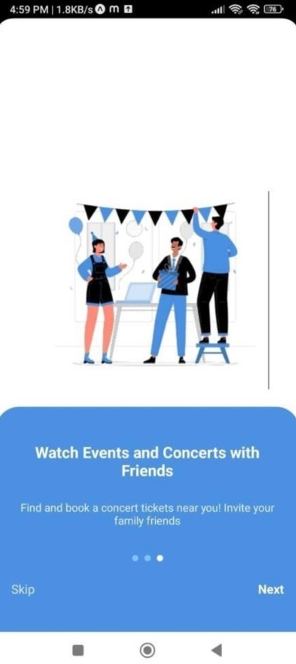
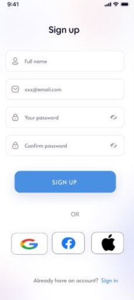
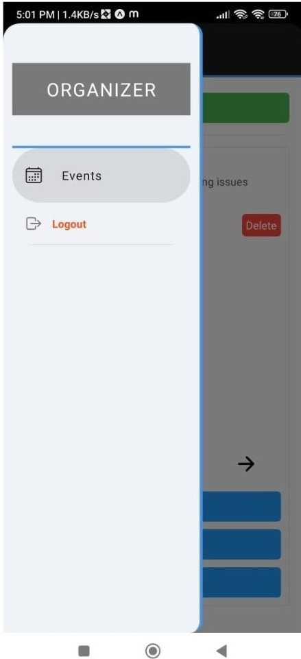
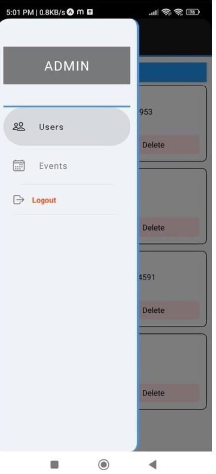
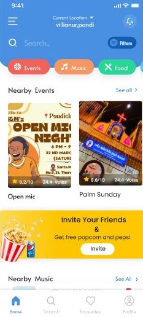
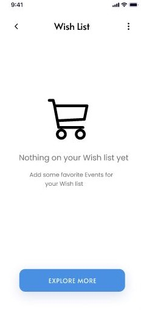
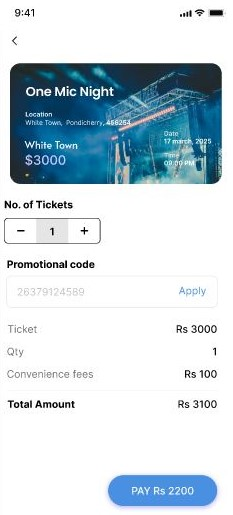

Regional Event Navigator App
A region-focused mobile application designed to help residents, students, and tourists discover, explore, and participate in local events happening in and around Pondicherry.
Overview
The Regional Event Navigator App (RENA) is a region-specific mobile application designed for discovering and accessing events happening in and around Pondicherry.
The application provides a centralized platform where users can browse local events, search and filter events based on their interests, view detailed event information, and register for events. Event organizers can also create, update, and manage event listings.
The project focuses on improving awareness of local festivals, workshops, educational programs, exhibitions, cultural activities, and community gatherings through a simple and accessible mobile experience.
The Problem
Pondicherry hosts numerous cultural, educational, social, and community events throughout the year. However, information about smaller regional events is often distributed across different platforms and communication channels.
General event platforms primarily focus on large-scale or commercial events and may not provide sufficient visibility for smaller community-based activities in Pondicherry.
This can result in limited awareness of local events, difficulty finding event details, and missed opportunities for residents, students, tourists, and event organizers.
Objectives
- Provide a dedicated platform for discovering local events in Pondicherry.
- Allow users to search and filter events according to their interests and categories.
- Display important event information such as name, date, time, venue, description, and organizer details.
- Enable event organizers to create and manage event listings.
- Support event registration and booking-related functionality.
- Provide location information and map-based event discovery.
- Keep users informed about upcoming events and reminders.
- Improve interaction between event organizers and attendees.
System Workflow
The Regional Event Navigator follows a user-oriented workflow connecting authentication, event discovery, event management, registration, and notifications.
Users can open the application, authenticate, browse available events, search or filter them, and select an event to view detailed information. Users can then register for an event, while organizers can create, update, delete, and manage event information through the application.
Architecture
The system follows a layered mobile application architecture in which the React Native frontend communicates with backend services for authentication, event management, registration, and data retrieval.
User Interface Layer
Provides mobile screens for welcome, login, registration, event browsing, event details, booking, and organizer management.
React Native Application Layer
Handles navigation, user interactions, forms, event lists, event details, maps, image selection, and registration workflows.
Backend API Layer
Python Flask handles authentication, user management, event operations, image uploads, and event registration through REST API endpoints.
Application Services Layer
Node.js is described in the project report as supporting real-time features such as notifications, live updates, and communication services.
Database Layer
Stores user information, event records, organizer details, event images, registration records, and related application data.
External Services
Map and location services can be integrated to support event location selection, map viewing, and navigation-related functionality.
Key Features
Project Showcase
A look at the Regional Event Navigator App interface, event discovery workflow, organizer management features, and mobile application screens.








Technical Implementation
The frontend of the application was developed using React Native, providing a cross-platform mobile interface for Android and iOS. The application contains screens for authentication, event browsing, event management, registration, and location-based functionality.
The backend uses Python Flask to handle REST API requests for user authentication, event creation, event retrieval, event updates, deletion, image uploads, and event registration.
The project also describes Node.js as a supporting technology for real-time functionality such as notifications, live updates, and communication-related services.
The database stores user records, event details, event images, organizer information, and event registration data. The implemented backend code demonstrates database operations for creating, retrieving, updating, and deleting records.
Location functionality is supported through mobile location services and map integration, allowing event organizers to select event coordinates and users to view event locations.
Challenges
- Providing reliable and relevant event information specifically for a regional audience.
- Designing an interface that remains simple and accessible for different categories of users.
- Managing different user roles including users, organizers, and administrators.
- Connecting the React Native frontend with backend REST APIs.
- Managing event images and associating uploaded images with individual event records.
- Implementing event location selection and map-based functionality.
- Maintaining consistent event and registration data between the mobile application and backend database.
- Testing the application across different mobile devices and screen sizes.
Outcome & Future Scope
The Regional Event Navigator App provides a centralized platform for discovering and managing events within the Pondicherry region. It connects event attendees with organizers through a mobile-first interface focused on local event visibility.
The project demonstrates the integration of a React Native mobile frontend with backend services, database operations, event registration, image management, and location-related functionality.
The project report identifies several possible enhancements for developing the platform further:
- Personalized event recommendations based on user interests.
- Real-time notifications and event reminders.
- Community discussion and social interaction features.
- Wishlist and saved-event functionality.
- Secure online payment and digital ticketing.
- Event reviews and ratings.
- Multi-language support for a wider regional audience.
- Advanced organizer dashboards and analytics.
- Improved map and navigation integration.